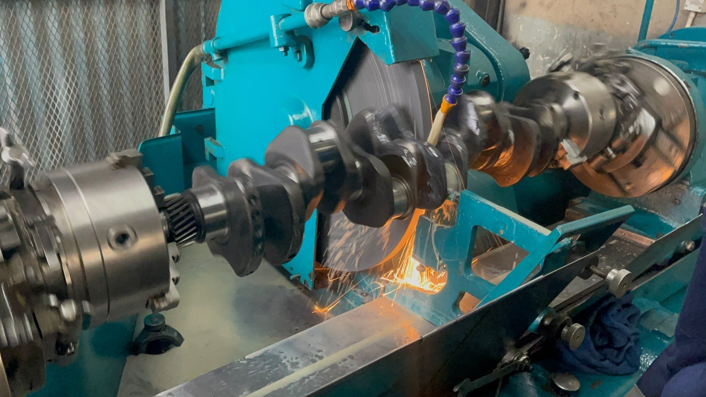
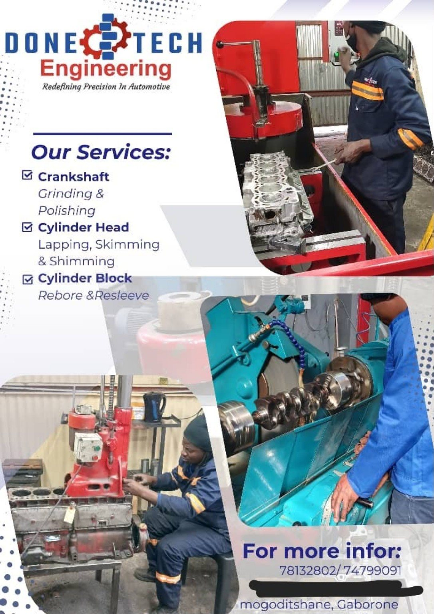
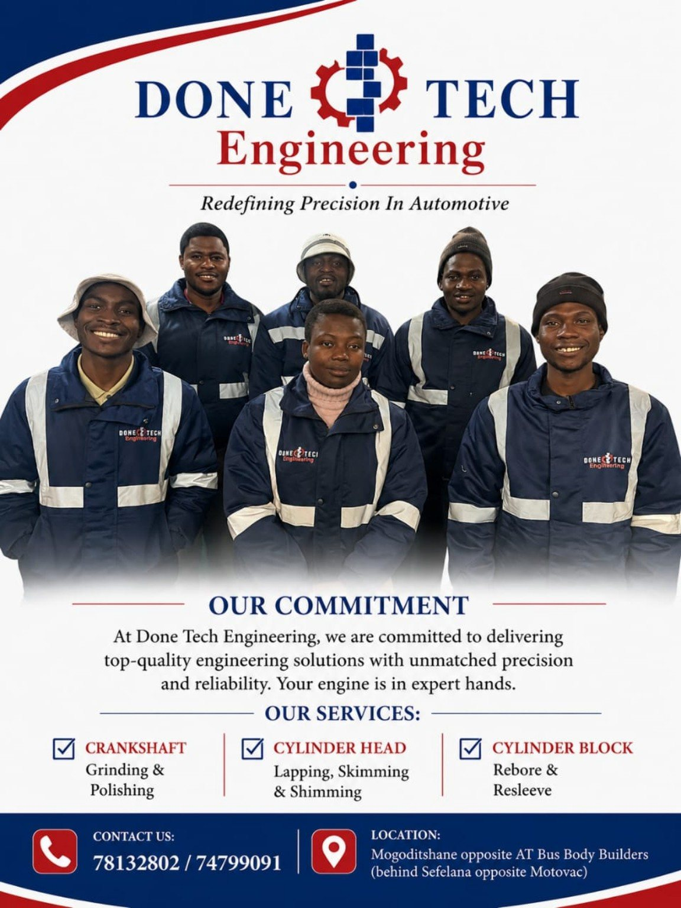
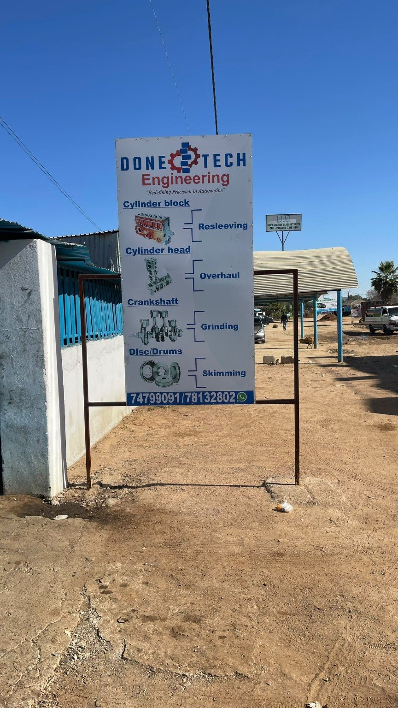
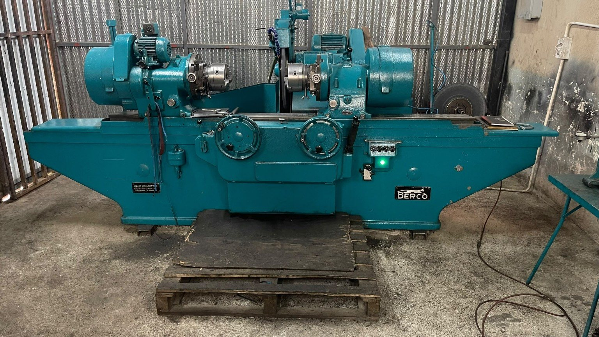
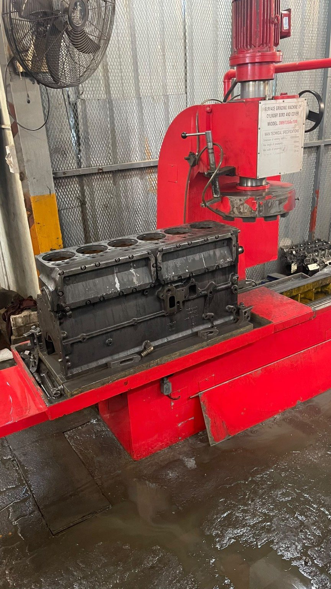
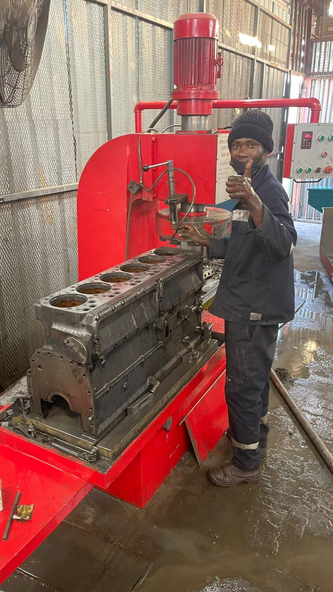
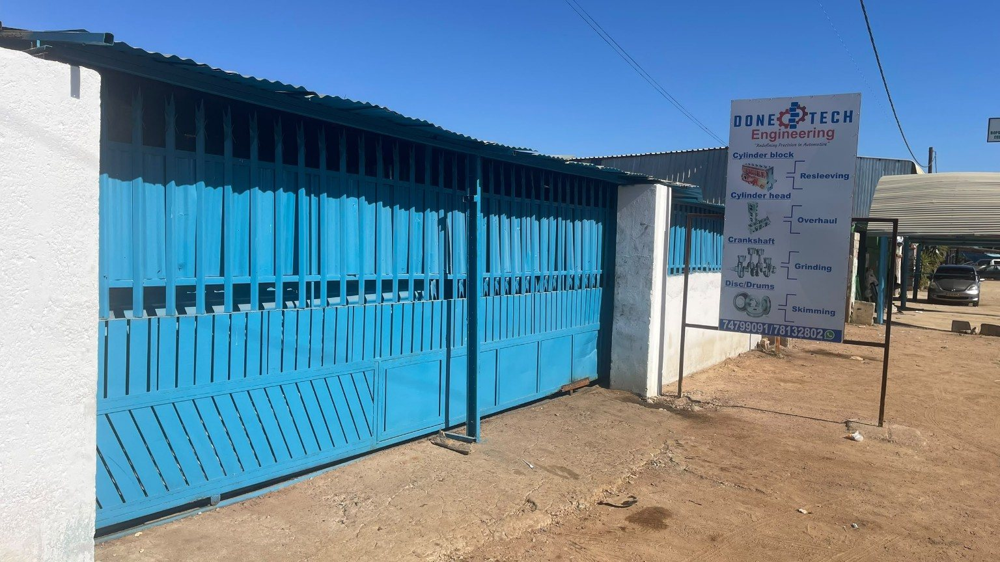
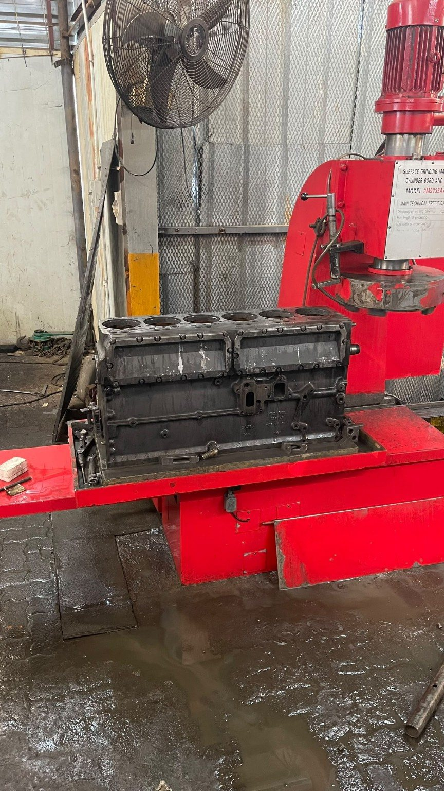

Crankshaft Grinding & Polishing
Precision grinding and polishing of crankshaft journals to restore suitable surface condition and dimensional accuracy.
AUTOMOTIVE ENGINEERING • PRECISION • RELIABILITY
DoneTech Engineering provides specialised machining and engine-component services in Mogoditshane, Gaborone, for restoring critical automotive components to accurate, dependable working condition.

ABOUT DONETECH
DoneTech Engineering is an automotive engineering company established on 16 October 2020. We specialise in correcting defects and restoring automotive components through precision machining, repair and related engineering services.
Our workshop combines practical experience, specialised machinery and a commitment to accurate workmanship. From crankshafts and cylinder heads to engine blocks and brake components, our work is focused on helping customers restore important vehicle components.
FounderWestorn Zhawu
Established16 October 2020
LocationMogoditshane, Gaborone
Tax registration000 025 02937
OUR SERVICES
Precision grinding and polishing of crankshaft journals to restore suitable surface condition and dimensional accuracy.
Machining and corrective work on cylinder heads to support proper mating surfaces and engine performance.
Engine block machining and resleeving work for worn or damaged cylinder bores.
Machining of brake discs and drums to help restore suitable braking surfaces.
Component-focused overhaul work based on inspection and the condition of the engine parts presented to the workshop.
Identification and correction of defects in automotive parts using appropriate engineering and machining processes.
OUR WORKSHOP
A selection of DoneTech Engineering's workshop, equipment and machining work.








DONETECH IN ACTION
Take a look inside our workshop and see precision automotive engineering in practice.
Watch our workshop in action and see the precision, machinery and workmanship behind our automotive engineering services.
OUR COMMITMENT
At DoneTech Engineering, we are committed to delivering quality engineering solutions with careful workmanship, practical problem-solving and attention to precision. Your engine components deserve expert hands.
CONTACT DONETECH
Call, email or message us on WhatsApp for service enquiries, or visit our workshop in Mogoditshane.
Opposite AT Bus Body Builders, behind Sefalana opposite Motovac.
Open in Google Maps →